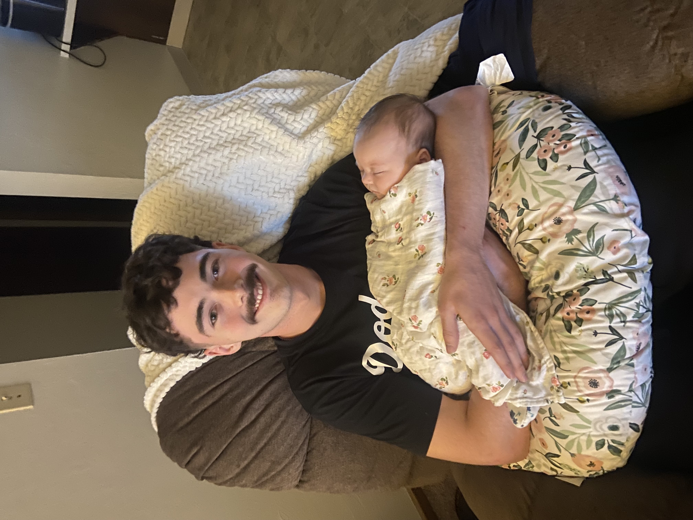

Through my education at Brigham Young University Idaho, I hope to receive a bachelor's in computer science, and receive valuable internships and knowledge along the way. Doing what makes me happy is most important to me and I work as hard as possible in order to achieve that. When deciding a major I knew I wanted to become a computer scientist, but what field I wanted to go into was unknown to me until as of late. After taking a data science class and getting exposed to languages like SQL, and python libraries such as Pandas, I knew that being a machine learning engineer was something that I would want to work towards in my professional career.
My name is Kevin Frehner and im from Bakersfield, California. My hobbies include coding, watching or playing baseball, and spending time with my family. I am the youngest of 3, and I hope to be a business owner someday under the path of machine learning.